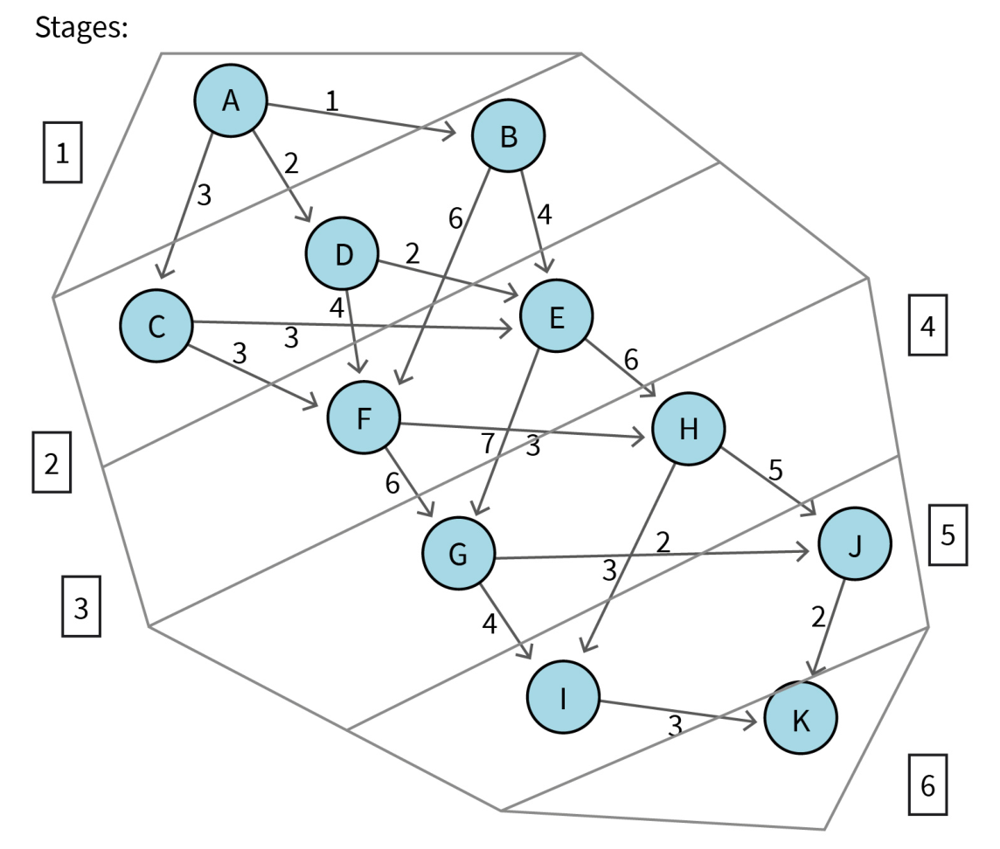

Original visuals for this section
Study these with the detailed explanation in the linked Obsidian note.


DLMAIRIL01 - Source-derived printable review sheet
Condensed from the same learning note. No additional teaching topics or official examination questions. Formulas and fonts render offline.
Dynamic programming exploits the fact that optimal continuations can be solved as smaller subproblems, avoiding repeated enumeration of complete decision sequences.
| Term | Meaning |
|---|---|
| Directed graph | Nodes represent towns and directed edges represent available route segments. |
| Constructive enumeration | An explicit list of every candidate solution. |
| Rule of product | Multiply fixed task-choice counts to count complete sequences. |
| Constraint | A condition restricting which candidate solutions are permitted. |
| Divide and conquer | Decompose a complex problem into simpler subproblems. |
| Remaining distance | Cost of the continuation from the current town to the destination. |
Route distance is the sum of its edge labels. The source graph has complete routes.
For a route required to pass through G:
Compare the best routes through G and H, using their independent segment optima. This reduces the source's first enumeration from 24 full routes to 16 shorter segments.
The two source routes A-D-F-G-I-K and A-D-F-G-J-K share the first segment of distance 12. Their remaining distances are 7 and 4 respectively, so the totals are 19 and 16. Reusing the shared segment is the first step toward a recursive solution.
Study these with the detailed explanation in the linked Obsidian note.

Answer before expanding. Open the answers before printing to include them.
A process in which a sequence of actions influences accrued cost or reward.
List every candidate solution explicitly and evaluate it.
Twenty-four, from three times two times two times two times one choices.
The number of complete action sequences multiplies across stages.
The remaining route distances depend on the current town, not on the route previously taken.
The candidate route must pass through town G.
Six plus six plus two plus two shorter segments instead of twenty-four full routes.
Learning note: 02_unit_2_dynamic_programming_and_markov_decision_processes/01_introduction_to_sequential_decision_making.
Course book pp. 52-59. Printed page + 2 = PDF viewer page. Personal-study use.